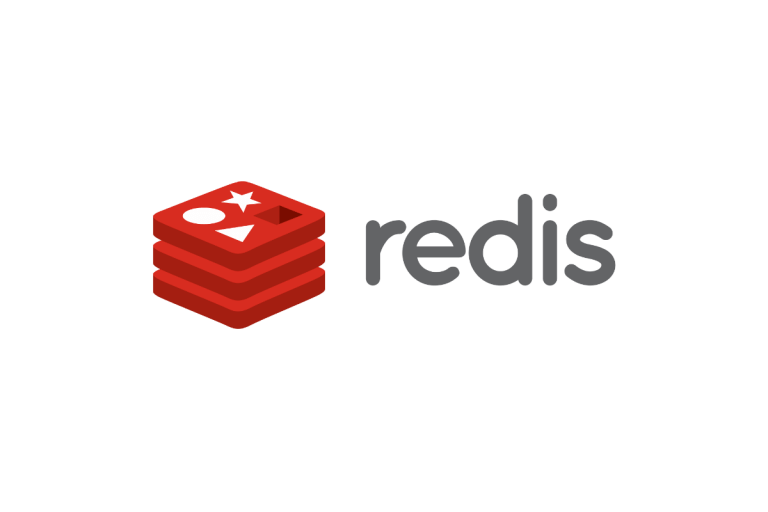

Made by ColdReader94 for RSSchool
What is Redis?
Redis is an open source (BSD licensed), in-memory data structure store, used as a database, cache, and message broker.
Where Redis used?
Due to the nature of the database design, typical use cases are session caching, full page cache, message queue applications, leaderboards and counting among others.
Is Redis popular?


Large companies such as Twitter are using Redis, Amazon Web Services offers a managed Redis service called Elasticache for Redis, Microsoft offers Azure Cache for Redis in Azure, and Alibaba is offering ApsaraDB for Redis in Alibaba Cloud.
Why Redis?
It`s open source and free.
It`s very fast.
Provides data structures such as strings, hashes, lists, sets, sorted sets with range queries, bitmaps, hyperloglogs, geospatial indexes, and streams.
Other features such as:
Which OS supports Redis?
Redis is written in ANSI C and works in most POSIX systems like Linux, *BSD, and OS X, without external dependencies. There is no official support for Windows builds, but we can use Redis in Open Server.
How to install Redis?
Download it from redis.io or use this special URL that always points to the latest stable Redis version, that is, http://download.redis.io/redis-stable.tar.gzTo compile Redis follow these steps:
wget http://download.redis.io/redis-stable.tar.gz
tar xvzf redis-stable.tar.gz
cd redis-stable
make
It is a good idea to copy both the Redis server and the command line interface into the proper places, either manually using the following commands:
sudo cp src/redis-server /usr/local/bin/
sudo cp src/redis-cli/usr/local/bin/
Or just using
sudo make install.
Now you can run Redis
The simplest way to start the Redis server is just executing the redis-server binary without any argument.
$ redis-server
[28550] 01 Aug 19:29:28 # Warning: no config file specified, using
the default config. In order to specify a config file use
'redis-server /path/to/redis.conf'
[28550] 01 Aug 19:29:28 * Server started, Redis version 2.2.12
[28550] 01 Aug 19:29:28 * The server is now ready to accept
connections on port 6379
... more logs ...
Redis provides a command line utility that can be used to send commands to Redis. This program is called redis-cli. The first thing to do in order to check if Redis is working properly is sending a PING command using redis-cli:
$ redis-cli ping
PONG
It works!
List of frequently used commands:
GET - Get key value
SET - Set the string value of a key
EXISTS - Determine if key exists
FLUSHALL - Delete all the keys of all the existing databases, not just the currently selected one
GETSET - Set the string value of a key and return its old value
DEL - Delete a key
KEYS - Find all keys matching the giving pattern
INCR / DECR - If value of key is integer - icrement / decriment it by one
TTL - Get the time to live for a key
PERSIST - Remove the expiration from a key
RENAME - Rename a key